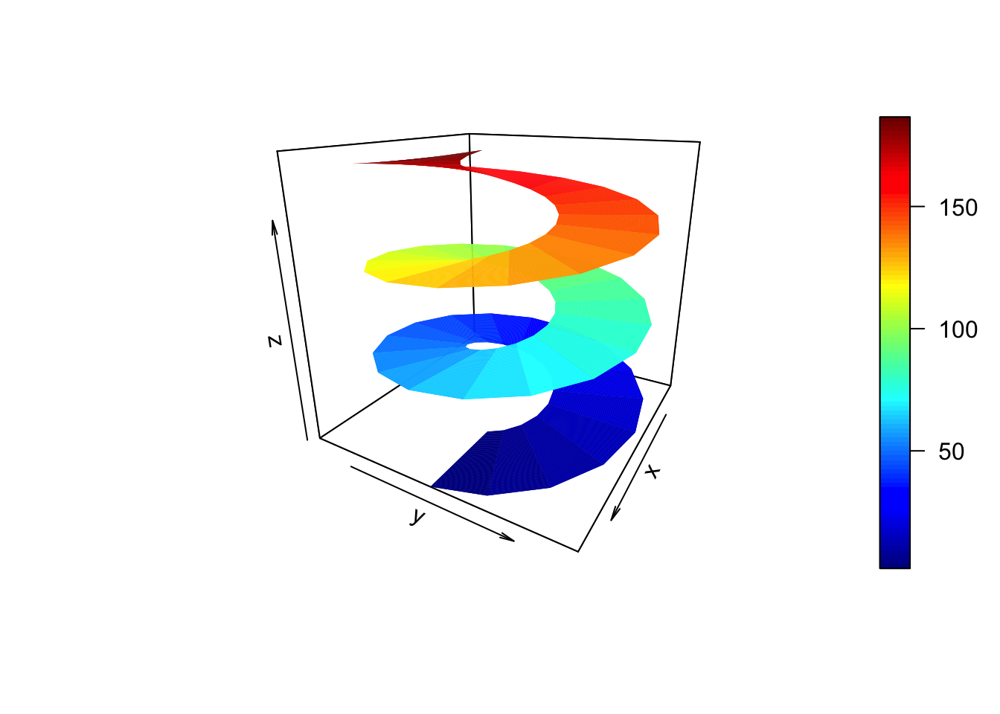
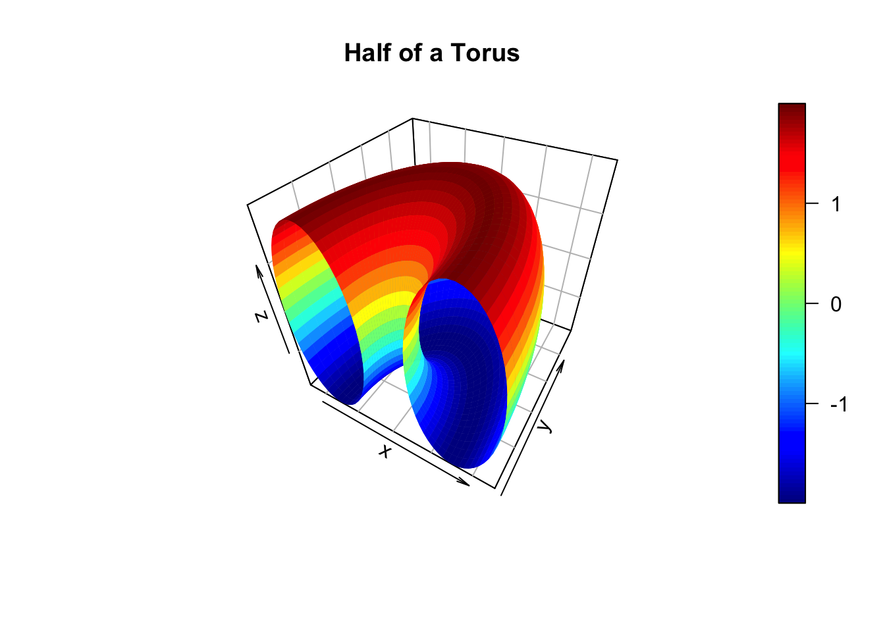
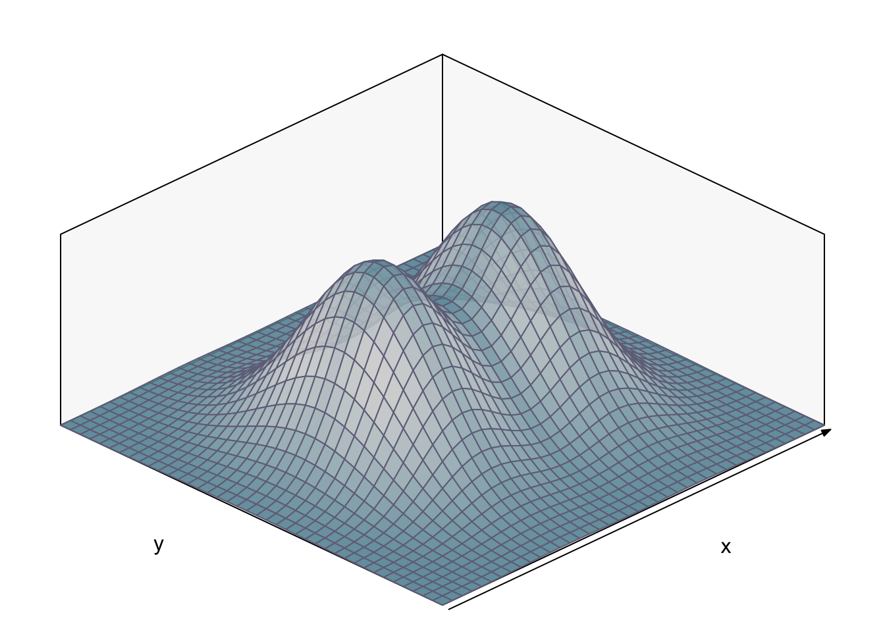

In this post, I’d like to review some basic options for plotting three dimensional surfaces in R. In addition to producing some eye catching visualizations, plotting surfaces can also help develop one’s geometric intuition for the mathematics describing the surfaces.
The first plot below shows a Helicoid surface which is the path a propeller moving at uniform speed along the z-axis would sweep out. You might be familiar with this shape from working with a hand turned steel auger or a helocoid anemometer. The surface is built up from first principles as follows: we consider two open intervals U = {u: \(\) (0 , 2\(\))} and V = {v: \(\) (0 , \(\))}, lay down a mesh or grid over the two dimensional open set U x V, compute the parametric representation of the surface in \(R^{3}\), and use the surf3D() function from the plot3D package to render the surface.
library(plot3D)
M <- mesh(seq(0, 6*pi, length.out = 50),seq(pi/3, pi, length.out = 50))
u <- M$x ; v <- M$y
x <- v * cos(u)
y <- v * sin(u)
z <- 10 * u
surf3D(x, y, z, colvar = z, colkey = TRUE,
box = TRUE, bty = "b", phi = 20, theta = 120) The next code block uses the same approach and functions to render half of a torus.
R <- 3; r <- 2
M <- mesh(seq(0, 2*pi,length.out=50), seq(0, pi,length.out=50))
alpha <- M$x; beta <- M$y
x <- (R + r*cos(alpha)) * cos(beta)
y <- (R + r*cos(alpha)) * sin(beta)
z <- r * sin(alpha)
surf3D(x = x, y = y, z = z, colkey=TRUE, bty="b2",
phi = 40, theta = 30, main="Half of a Torus")
You might test your intuition about the how changing the ratio of R and r alters the look of the torus.
I think surf3D(), which is built on base R graphics, produces high quality visualizations. I really like the crisp, metallic look of the torus. However, although surf3D() allows you to set the viewing angle, it is limited to producing static plots. A first remedy for this might be to consider the plot3d() function in the rgl package which contains functions built on base graphics and the OpenGL standard for high performance graphics. You can use the same code as above, but just swap out surf3D() and replace it with plot3d().
Here is a wireframe version of the half torus that you can rotate with your mouse.
library(rgl)
torus <- plot3d(x, y, z, type = "l", col = "blue",
cex = .3, pch = 1, main = "Half Torus", pch = 20)
rglwidget(elementId = "plot3drgl")These days, of course, JaveScript has become the preferred rendering engine for interactive plots, and there are several possibilities for creating interactive, JavaScript plots in R including threejs, plotly, and graph3D. Here we show an arresting rendering of two surfaces from the threejs gallery that is built up from the parametric equations.
library("threejs")
N = 20000
theta = runif(N)*2*pi
phi = runif(N)*2*pi
R = 1.5
r = 1.0
x = (R + r*cos(theta))*cos(phi)
y = (R + r*cos(theta))*sin(phi)
z = r*sin(theta)
d = 6
h = 6
t = 2*runif(N) - 1
w = t^2*sqrt(1-t^2)
x1 = d*cos(theta)*sin(phi)*w
y1 = d*sin(theta)*sin(phi)*w
i = order(phi)
j = order(t)
col = c(rainbow(length(phi))[order(i)],
rainbow(length(t), start=0, end=2/6)[order(j)])
M = cbind(x=c(x, x1), y=c(y, y1), z=c(z, h*t))
scatterplot3js(M, size=0.1, color=col, bg="black", pch=".")Probability Distributions
3D plots are also useful for visualizing probability distributions. For a first look at this, we return to base R graphics and the bivariate package. This plot from the package vignette shows a mixture of two bivariate normal distributions X and Y where X ~ N(\(,\)) with
\(= \[\begin{pmatrix}3.5\\\0\end{pmatrix}\] \) , \(= \[\begin{pmatrix}1 & 0\\\0 & 1\end{pmatrix}\] \) and Y ~ N(\(,\)) with \(= \[\begin{pmatrix}6.5\\\0\end{pmatrix}\] \) , \(= \[\begin{pmatrix}1 & 0\\\0 & 1\end{pmatrix}\]\)
library(bivariate)
f <- bmbvpdf (3.5, 0, 1, 1, #first component distribution
6.5, 0, 1, 1) #second component distribution
plot (f, axes = c (TRUE, FALSE), xat = c (3.5, 6.5) )
Both plotlyand threejs can also render interactive distribution plots. Here is a plotly two-dimensional kernel density plot.
library(plotly)
kd <- with(MASS::geyser, MASS::kde2d(duration, waiting, n = 50))
fig <- plot_ly(x = kd$x, y = kd$y, z = kd$z) %>% add_surface()
fig\). Here we use dmvnorm()function from the mvtnorm package.
library(mvtnorm)
u <- seq(-5, 5, by = .1)
v <- seq(-5, 5, by = .1)
M <- expand.grid(u,v)
x <- M$Var1
y <- M$Var2
sigma <- matrix(c(1, .5, .5, 1), nrow = 2, byrow = TRUE)
z <- dmvnorm(x = M, sigma = sigma)
scatterplot3js(x, y, z, phi = 40, theta = 20,
color=rainbow(length(z)),
colkey = FALSE,
cex = .3,
main = "Bivariate Normal")I have shown several plots, but forgive me if I have barely “scratched the surface” of possibilities. Not only can you render more elaborate plots of two-dimensional surfaces floating in three-dimensional space, and more complex probability distributions, but there are many other kinds of interesting surfaces to plot. For some examples, have a look at the Ocean View Gallery referenced in the plot3D vignette.
If you have been working on interesting visualizations and want to show them off here at R Views, we would love to have them. Send an .Rmd file with your code and a few words describing what you have done to joseph.rickert at RStudio.com and we will see if we can publish it.